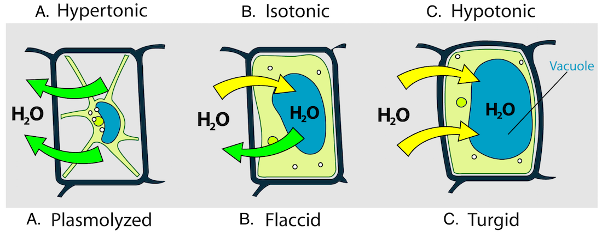

Structural differences between veins & arteries
TOPICS: Anatomy

The circulatory system is responsible for the circulation of blood, fluids, and nutrients to the whole system. It involves the heart, blood, and the vessels. Today, we are to focus on the vessels: the arteries, veins, and capillaries. How are they different in structure?
Veins carry blood to the heart. Since they come from the capillaries and lost their 'push', they have valves that direct blood flow to the heart. The systolic & diastolic pressure partly keeps them forward in the arteries, until the capillaries where they slow down. Veins have valves also to combat gravity. Usually, muscles partially help the unidirectional flow, but valves direct blood to the heart without the interference of gravity. Blood from the toe capillaries can go up to the heart due to the valves in the veins.
Arteries have a thicker epithelium than veins. This is due to the fact that they lead blood from the heart, meaning that there is a lot of pressure from the heart's contraction and dilation. There is a lot of force, and cells have to be prepared. With a thick epithelium, vessels can withstand the big force. Othewise, some portions of the wall may break.
How is physics related?
Gravity is the force the earth exerts onto an object. Blood is an object, and is therefore subject to gravity. Valves exert a force opposite to the direction of gravitational force, developing some sort of suction or 'push' to the direction of motion to combat gravity. Muscles contract and push fluids up, since the volume of the vessel is restricted by the muscle space.
Pressure is equal to force per surface area. The heart may exert force and pressure, so a fortified wall can distribute pressure on the vessel and its surroundings, and lessen the apparent pressure of 1 area unit of vessel.
Sources
Forum on pressure (Socratic)
Sharecare's Q&A on the difference of an artery & vein
Osmosis and Turgor
TOPICS: Histology, Botany

Osmosis is the fundamental chemophysical process of water going from a low concentration of solutes to a high concentration of solutes. It is related to the tonicity of fluid and its effects on cells, to the osmoregulation of animals and excretion of nitrogenous wastes. It somewhat influences transpiration, the transport of water up the xylem. One aspect of osmosis in plants is turgor pressure.
Turgor pressure is the pressure water exerts to the wall of a plant cell. When a plant cell becomes turgid, meaning it has a positive net movement of water into the cell (causing turgidity), its cell wall prevents the cell from bursting. The vacuole assists in inciting water influx by osmoregulation. The cell is withstand the turgor & osmotic pressure.
Stomata opening and closing are due to the regulation of turgor pressure in the guard cell. When there is a high concentration of K cations in the cell, water, through osmosis, influxes the cell, causing the cell to open. More K cations outside cause an efflux of water.
Negative turgor pressure is caused by transpiration. Water leaves the stomata and evaporates, causing high surface tension and negative turgor pressure in the xylem, allowing root water to go up to the apical parts of the plant.
How is physics related?
Pressure is the physical force acted upon an object. Cell walls are thick and adapted to have lignin to protect cells from bursting due to the influx of water, as well as vacuoles to take in water. A force can break a membrane, but not a rigid wall. Balanced pressures keep a system in neutral form and equilibrium; turgor pressure can regulate a system, whether it be the flow of water in transpiration, the taking in of gasses and/or transpiration of water, to the regulation of wastes.
Sources
ScienceDirect's article on Turgor Pressure
Forum on pressure (Socratic)